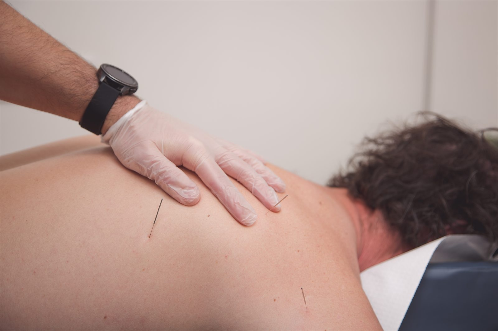
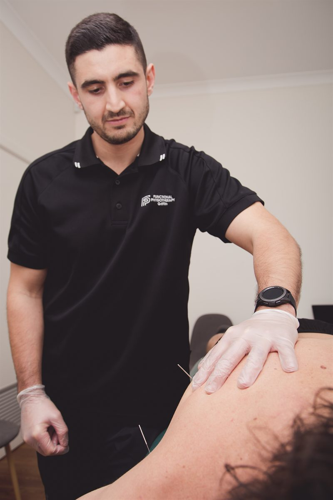

Fine, sterile needles placed precisely into tight, painful muscle to release tension and restore movement. We use dry needling as part of a treatment plan, alongside hands-on therapy and exercise — not as a standalone fix.

A thin filament needle, inserted into a tight band of muscle, to switch off a trigger point that is causing pain or restricting how you move.
Muscles under sustained load develop taut bands with hypersensitive spots inside them, known as trigger points. Press one and it hurts locally, often referring pain somewhere else entirely — which is why a trigger point in the upper trapezius can feel like a headache, and one in the glutes can feel like sciatica. Trigger points also shorten the muscle, which quietly limits range of motion and shifts load onto tissues that were not built to carry it.
Dry needling treats those points directly. A fine, sterile, single-use needle is placed into the taut band. There is nothing injected — hence “dry”. The needle often produces a brief local twitch response, after which the band typically releases, blood flow to the area increases and the muscle’s resting tension drops. Most people notice more movement and less local tenderness immediately.
The important part is what happens next. A released muscle that goes straight back to the same load will tighten again. So we treat the trigger point, then address the reason it formed — a stiff joint above it, a weak muscle below it, a workstation, a training error, a running pattern. That is why we never sell dry needling on its own.
Dry needling is a special interest of our principal physiotherapist, Chris Vitucci, who has completed three advanced GEMt courses and assists in teaching the technique to other health practitioners. That matters more than it might sound: needling well is a matter of knowing precisely what sits under the needle and how a given muscle refers, and the people who teach a technique tend to be the people who have had to explain every part of it out loud.
They use a similar needle. Everything else about them is different.
Acupuncture comes from traditional Chinese medicine and works to a map of meridians and points, with the aim of influencing the flow of energy through the body. Dry needling comes from Western musculoskeletal medicine and works to a map of muscles, trigger points and referral patterns, with the aim of releasing a specific piece of tissue that is causing a specific problem.
In practice that means the reasoning is different, the point selection is different and the treatment goal is different. An acupuncturist may needle points distant from where it hurts, according to their framework. A physiotherapist needling your calf is doing so because they have palpated a taut band in your soleus and believe it is limiting your ankle range.
The other difference is context. When a physiotherapist offers dry needling, it sits inside an assessment, a diagnosis and a rehabilitation plan. The needling is one tool in that plan — usually a tool for buying a window of reduced pain and improved range, so that the loading and strengthening work that produces the lasting change can actually be done.

We assess and palpate first, and tell you which muscles we intend to treat. The area is cleaned, and a needle thinner than the ones used for injections is inserted through the skin into the muscle. Most people describe the skin entry as a small prick or nothing at all. The sensation that follows — a deep, dull ache, sometimes a brief involuntary twitch — is the part people remember, and it usually lasts a few seconds.
Needles may be left in place briefly or removed straight away, depending on the muscle and the response we are after. A typical treatment covers a small number of targeted muscles rather than a large area, and forms part of a standard appointment rather than replacing it.
Most people feel looser and move better immediately. It is also common to feel a mild post-treatment ache in the treated muscle for up to a day or so, similar to the feeling after a decent gym session, and occasionally some minor bruising. We will tell you what to expect for your particular muscles, and we generally suggest staying hydrated, moving normally and avoiding a heavy training session that same day.
It has a strong safety record in trained hands. It is still not the right choice for every person or every problem.
Performed by a trained physiotherapist using sterile single-use needles, dry needling is a low-risk treatment. The common side effects are minor and short-lived: post-treatment muscle soreness, small bruises, occasionally a brief light-headed feeling. Serious adverse events are rare and are largely avoided by sound anatomical knowledge of what lies beneath each needling site — which is precisely what the training covers.
That said, we will talk through your history before we needle. Tell us if you are pregnant, taking blood-thinning medication, have a bleeding disorder, a compromised immune system, a needle phobia, a pacemaker or other implant, lymphoedema in the limb, or an active local skin infection. Some of those rule needling out; several simply change where and how we needle. If you would rather not have needles at all, say so — manual therapy, soft-tissue work and loading strategies can achieve a great deal on their own.
Dry needling is a component of a plan, so the honest answer is that it depends on the plan. Many people feel a meaningful difference within the first two or three treatments. If several sessions produce no change, that is useful information: it usually means the muscle was not the main driver, and we look elsewhere rather than repeating a treatment that is not working.
Dry needling is most often used alongside these. Every one of them is treated at our Dapto clinic.
Hands-on treatment and targeted exercise for back pain, neck pain and sciatica.
Read moreServiceDiagnosis, treatment and staged return-to-sport rehabilitation for athletes at every level.
Read moreConditionVestibular physiotherapy for BPPV and balance, plus treatment for neck-related headaches.
Read moreBook an assessment and we will tell you honestly whether dry needling is the right tool for your problem.